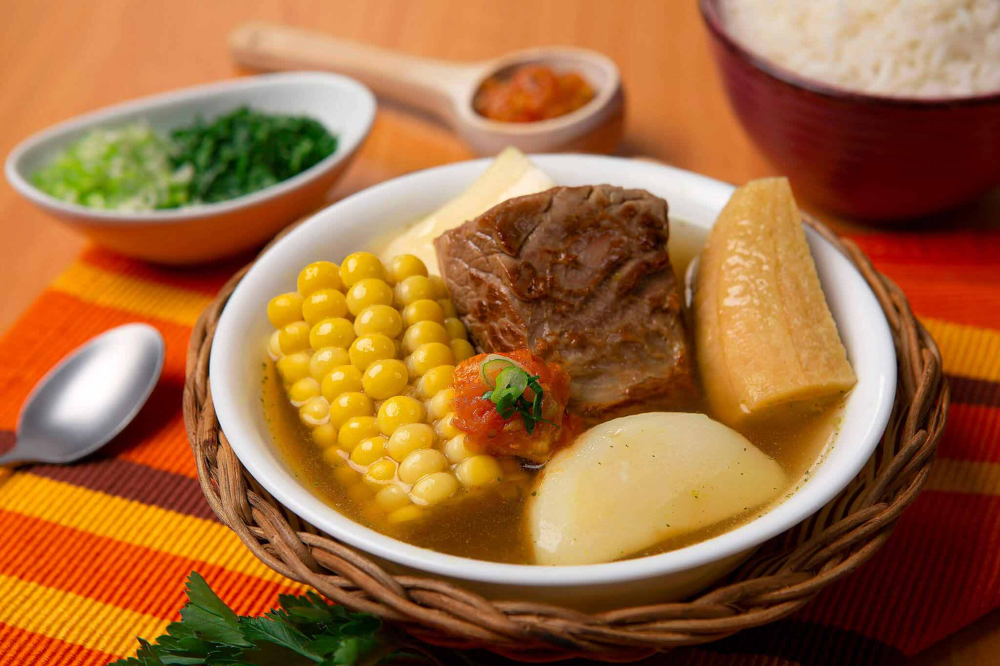

Sancocho

Descripcion
Ingredientes
- 2 Kg carne de res (al gusto)
- 1 Platano verde
- 1 Libra de yuca
- 1 Libra de ñame
- 2 Papas
- 2 Mazorcas
- 4 Dientes de ajo
- 2 Ramitas de cebolla larga
- Cilantro
- Sal
- Aji
- Pimienta
Paso a Paso
- Lavar y porcionar la carne: Lave la carne de res con agua y limón, y córtela en trozos individuales.
- Picar los vegetales del adobo: Pique finamente el cebollín, la cebolla morada, los ajíes dulces y machaque los ajos, dividiéndolos en dos partes iguales.
- Pelar y trocear el plátano: Pele el plátano verde y rómpalo en trozos medianos usando las manos para que suelte más almidón.
- Alistar tubérculos y ahuyama: Pele y corte en cubos el ñame, la yuca, las papas y la ahuyama, reservándolos en agua.
- Montar la base a presión: Coloque las carne de res en la olla a presión junto con el ajo machacado y la pimienta de olor.
- Incorporar primeros aliños: Agregue a la olla la mitad de la cebolla morada, la mitad del cebollín, sal y pimienta negra.
- Ablandar la carne a presión: Vierta de 10 a 12 tazas de agua, tape la olla y cocine a fuego medio durante 30 minutos tras el pitido.
- Hacer el traspaso de olla: Despresurice la olla con seguridad y transfiera la carne con todo su caldo a una olla grande convencional.
- Agregar el maíz y plátano: Encienda el fuego a nivel medio-alto y agregue las mazorcas en rodajas y los trozos de plátano verde.
- Hervir los bastimentos duros: Tape la olla grande y deje hervir el maíz y el plátano vigorosamente durante 15 minutos.
- Incorporar tubérculos y ahuyama: Reduzca a fuego medio y agregue los trozos escurridos de yuca, papa, ahuyama y los cubos de ñame.
- Añadir segundos vegetales: Vierta en el caldo la otra mitad guardada de los ajíes dulces, del cebollín y de la cebolla morada.
- Controlar líquidos y sal: Ajuste el nivel de agua con un poco de agua caliente si se evaporó mucho y rectifique la sal.
- Cocinar hasta espesar: Deje hervir parcialmente tapado por 25 minutos hasta que el ñame empiece a deshacerse y le dé espesor al caldo.
- Verificar cocción de alimentos: Pruebe con un cuchillo que la yuca y la papa estén completamente suaves en su centro.
- Agregar el cilantro fresco: Espolvoree un puñado generoso de cilantro fresco finamente picado cinco minutos antes de apagar la estufa.
- Mezclar con suavidad: Revuelva el sancocho suavemente con una cuchara de madera para evitar romper los tubérculos blandos.
- Dar el reposo obligatorio: Apague el fuego, tape por completo la olla y deje asentar los sabores durante 10 minutos antes de servir.
Video
Ver video